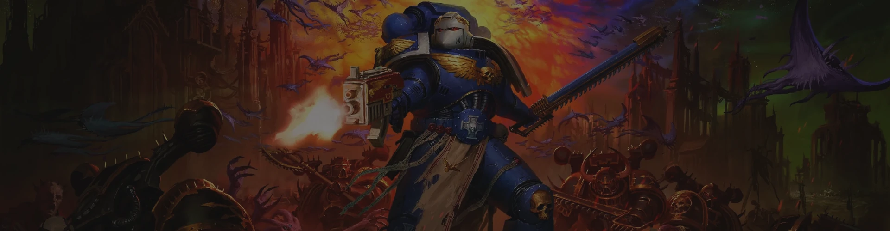
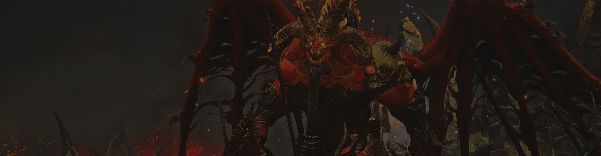
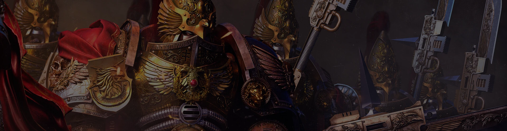
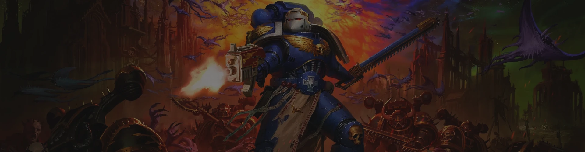
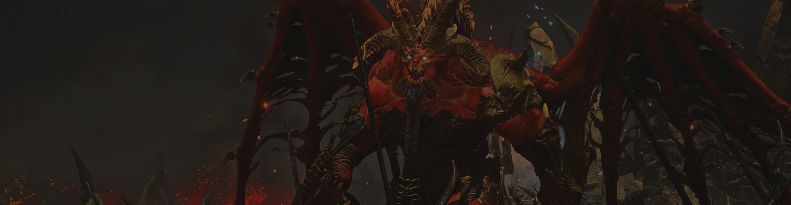
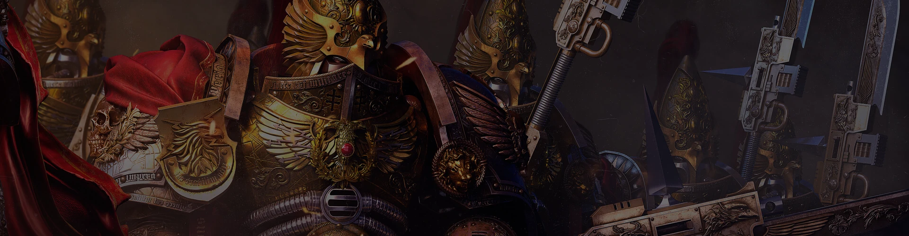
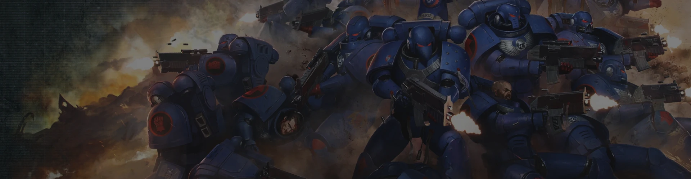
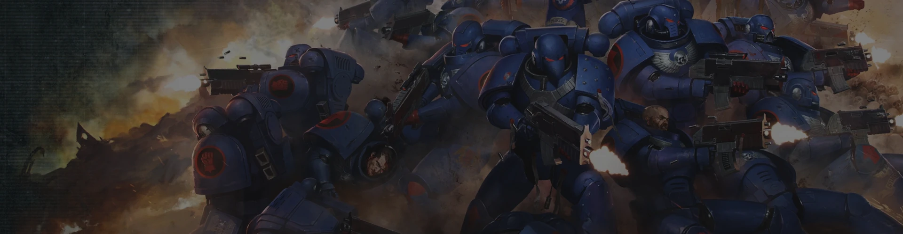
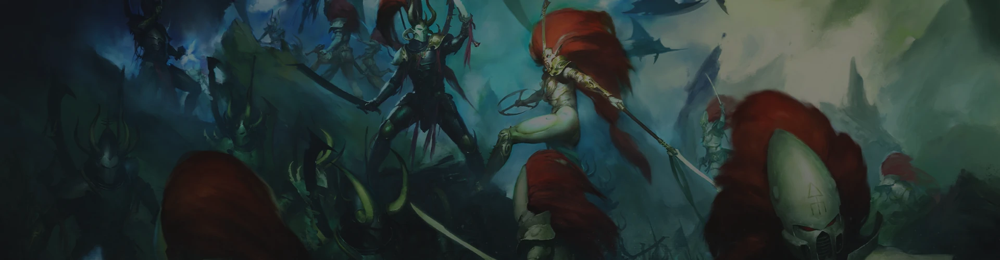
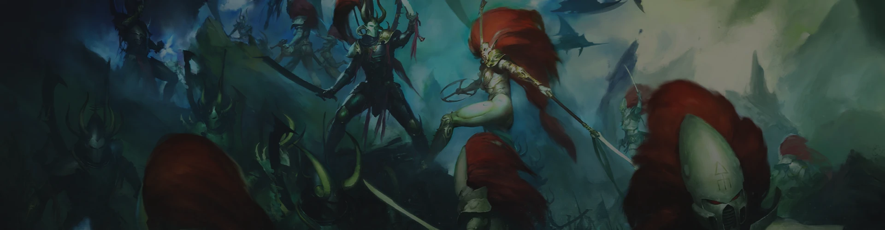

 


 


About The Factions
Adeptus Custodes
"These men are my bodyguards, their lives forfeit to the guarantee of my physical safety. Of their loyalty to me there shall be no question nor doubt. I, and I alone, shall have the authority to stand in judgement over them. No other commander shall they have in battle nor in service. None shall bar them from me and none shall hamper or stall their mission. So it is decreed!"
— Ancient declaration made by the Emperor of Mankind during the Age of Strife
The Adeptus Custodes, known as the Legio Custodes during the era of the Great Crusade and Horus Heresy, and colloquially as the "Ten Thousand," is the Imperial adepta responsible for protecting the Imperial Palace and the physical body of the Emperor of Mankind, as well as serving as His most important emissaries, His companions, and the keepers of His many secrets. The Custodes is an elite cadre of genetically-engineered transhuman male and female warriors who are even more potent in combat than the Adeptus Astartes. They are to the Space Marines as the Emperor is to His primarchs, and it is rumoured that each was created by the Master of Mankind personally. His might permeates them, burns in their eyes and flows through their veins as surely as their blood. As such, the Adeptus Custodes are widely regarded as the deadliest warriors in the galaxy, Human or otherwise.
Where Space Marines represent the mass-produced, genetically-engineered soldiers of the Imperium of Man, the Adeptus Custodes are a force of individual warriors, each a bastion in their own right and a sentinel of unmatched capability and singular purpose created to counter any possible threat -- Human, alien or Daemonic. These warriors have stood in the presence of the immortal Emperor of Mankind since before the time of the Unification Wars. For ten thousand Terran years and more, the Custodians have stood watch over their lord and master, serving as the Emperor's personal heralds and praetorian bodyguard.
During the Great Crusade these resplendent warriors guarded the Emperor wherever He went and swore to give their lives to protect His. After His incarceration in the Golden Throne following the Horus Heresy ten standard millennia ago, they have taken a far more limited role in the Imperium of Man. They almost never leave Terra and only very rarely are seen outside the Imperial Palace as they watch over their recumbent master and patrol the precincts of the Emperor's palace, ever vigilant of threats. It is only the Adeptus Custodes who decide who may enter the Sanctum Imperialis of the Emperor at the heart of the Inner Palace, and when they may do so.
With the birth of the Great Rift in the Era Indomitus, and the resurrection of Primarch Roboute Guilliman as the lord commander of the Imperium and Imperial Regent, the Adeptus Custodes have been forced to take a more active role in galactic affairs. A force of Custodians has followed Guilliman's Indomitus Crusade out into the galaxy, often serving as the heralds of a Torchbearers fleet bringing the Primaris creation technology to existing Space Marine Chapters.
This was done both to reassure the existing Chapters of the Adeptus Astartes that the gift of the Primaris Space Marines was ordained by the will of the Emperor, but also because in this new era of constant threat, the Custodes have come to a hard realisation: sometimes, the best defence is found on offence.
Ultramarines
"We are the Ultramarines, the sons of Guilliman. Whilst we draw breath, we stand. Whilst we stand, we fight. Whilst we fight, we prevail. Nothing shall stay our wrath."
— Marneus Calgar, Chapter Master of the Ultramarines
The Ultramarines are considered one of the strongest and most honoured of all the Space Marine Chapters in the Imperium of Man, and were responsible for almost single-handedly holding the Imperium together after the Horus Heresy.
Highly-disciplined and courageous warriors, the Ultramarines have remained true to the teachings of Primarch Roboute Guilliman for 10,000 standard years. The Ultramarines were originally the XIIIth Space Marine Legion before the reforms that initiated the Second Founding and reshaped the Imperium after the Heresy in the Time of Rebirth on the orders of Guilliman himself as the lord commander of the Imperium and Imperial Regent.
The name "Ultramarines" is a nod to the Chapter's galactic region of origin, its standing amongst the other Space Marine Chapters and their role as the source for the gene-seed of more Chapters of Astartes than any of the other former First Founding Legions combined.
The culture of the Ultramarines is loosely themed upon the culture of Old Earth's ancient Roman Empire, as exemplified in their Astartes' High Gothic names and their strict adherence to the Codex Astartes, as well as the society of their homeworld of Macragge and the Chapter's method of recruitment.
The Ultramarines directly rule the sub-sector of space in the Segmentum Ultima of the galactic east known as Ultramar as a fief of the Imperium and their Chapter Master is also considered the Lord of Macragge and the Master of Ultramar.
Of all the thousand and more Space Marine Chapters in the Imperium, it is the blue-clad Ultramarines that, in the mind of the countless billions of the Emperor's subjects, personify everything that the Adeptus Astartes stands for.
The Ultramarines and their many Successor Chapters have stood at the very forefront of the war against the Traitor, the alien, and the Daemon since the very foundation of the Imperium. Across the domains of the Emperor, the Ultramarines are celebrated as heroic, virtuous, and noble defenders of Humanity, their deeds recorded in devotional works the length and breadth of the galaxy.
Even amongst the Space Marine Chapters themselves, the Ultramarines occupy a position of special honour. The gene-seed from which the original Ultramarines Legion was founded is considered the purest, and it is estimated that some two-thirds of Chapters across the galaxy share their inheritance, being either direct successors or created from tithed Ultramarines genetic material. This shared inheritance often ensures that when the Ultramarines go to war, they are supported by many other Chapters, and that when Space Marine commanders gather to consider common strategy, the counsel of the Ultramarines is greatly valued.
Often, the presence of even a small number of Ultramarines units in a larger military undertaking will ensure the participation of many more Chapters, so highly are the sons of Roboute Guilliman held in their brothers' esteem.
Dark Angels
"Since the founding of their Legion at the birth of the Imperium, the Space Marines of the Dark Angels have been dreaded by their enemies and held in awe by those they protect. Stubborn and relentless in battle, ever vigilant and zealous in their pursuit of their duties, the Dark Angels are among the Emperor's most faithful servants. Yet, it was not always so. For ten millennia the Dark Angels have harboured a sinister secret, an act so terrible and shameful it threatens everything the Dark Angels hold most dear – and may yet bring them eternal damnation."
— Inquisitor Bastalek Grim
The Dark Angels are considered amongst the most powerful and secretive of the Loyalist Space Marine Chapters. They were the Ist Legion of the original 20 Space Marine Legions to be created during the First Founding of the 30th Millennium.
Though they claim complete allegiance and service to the Emperor of Mankind, their actions and secret goals at times seem at odds with that professed loyalty, as the Dark Angels strive above all other things to atone for an ancient crime of betrayal committed over 10,000 standard years ago against the trust of the Emperor during the time of the Horus Heresy.
The Dark Angels stand first amongst the Space Marine Chapters, as they have done since their very inception as the Ist Legion. They are a proud Chapter, with traditions and rituals that date back to the earliest days of the Imperium of Man.
The origins of the Dark Angels remain shrouded in mystery. Few Imperial records of the Chapter's beginnings still exist, nor are there many mentions of the part it played in the Emperor's Great Crusade during the early 31st Millennium. Most references in the histories of the Imperium to its deeds during the accursed times of the Horus Heresy have actually been expunged.
Yet a legend persists that at one point the Dark Angels teetered on the very brink of heresy and that an act of the most terrible betrayal dishonoured all of the Ist Legion's feats of valour, leaving an enduring stain upon all of its Successor Chapters' honour.
Such is their shame that from that time onwards, the Dark Angels and their Unforgiven successors, of which there are more than 19 currently in Imperial service, strive for absolution from the sins of millennia past.
The Dark Angels' terrible secret is this: during the Horus Heresy, some of their brethren were turned to the side of Chaos. The Renegades were defeated in a battle that destroyed the Dark Angels' Legion homeworld, Caliban, but many of the Traitor Dark Angels survived to be cast through space and time by the direct intervention of the Chaos Gods.
These survivors are known to those few Dark Angels granted knowledge of their existence as the "Fallen Angels" or just "The Fallen." In the eyes of the Chapter's leaders, there is only one way that the Chapter can ever atone for its shame, restoring its honour and trust in the eyes of the Emperor -- all of the Fallen must be found and either made to repent their ancient sin, or slain.
This story of treachery and betrayal is the Dark Angels' hidden shame, and their secret mission to destroy all of the Fallen is now their only hope of salvation. No one knows of this other than the Dark Angels, their Successor Chapters and, perhaps, the Emperor Himself, interred within His Golden Throne.
The Chapter has been shaped by its dark past and is secretive and monastic in nature, with much time given over to worship and prayer. There are many different levels within the Chapter which individuals may gradually rise through. On attaining each new level, they are granted a little more knowledge of the truth behind the Dark Angels' origins, but only the highest-ranking members of the Chapter, the members of what is known as the "Inner Circle," know the terrible, shameful secret of what occurred 10,000 Terran years ago.

Blood Angels

Space Wolves
Imperial Knights
World Eaters
Death Guard
Thousand Sons
Chaos Knights
Necrons